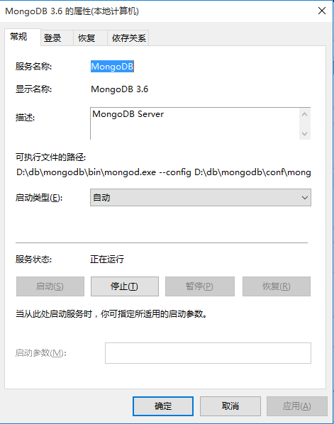

下载window版zip包，并解压到安装目录（以下简称主目录）下，创建data log conf目录（在主目录下，与bin同级），在conf目录下创建配置文件mongo.config，如下：
#数据库路径
dbpath=D:\db\mongodb\data
#日志文件
logpath=D:\db\mongodb\log\mongo.log
#日志输出追加
logappend=true
#错误日志采用追加模式
journal=true
#启用日志文件，默认启用
#quiet=true
#端口号默认为27017
port=27017
#IP绑定，默认127.0.0.1 只能本地访问
bind_ip=0.0.0.0
mongod --config "D:\db\mongodb\conf\mongo.config" --install --serviceName "MongoDB" --serviceDisplayName "MongoDB 3.6"
打开window服务，查看安装情况，默认非自动启动
下载liunx版tar包，并解压到安装目录（以下简称主目录）下，创建data log conf目录（在主目录下，与bin同级），在conf目录下创建配置文件mongo.config，如下
#数据库路径
dbpath=/db/mongodb/data
#日志输出
logpath=/db/mongodb/log/mongo.log
#日志输出追加
logappend=true
journal=true
#启用日志文件，默认启用
#quiet=true
#端口号默认为27017
port=27017
#IP绑定，默认127.0.0.1 只能本地访问
bind_ip=0.0.0.0
#以服务启动
fork=true
./mongod --config /db/mongodb/conf/mongo.config
默认是免认证的，即未开启，需要修改配置进行开启认证功能。
创建管理用户需要切换至admin库进行操作
创建普通用户需要切换至因为库进行操作
use admin
// 创建用户
db.createUser(
{user: "root", pwd: "123456", roles: [{role:"root",db:"admin"}]}
)
// 修改用户
db.updateUser(username, update, writeConcern)
// 修改密码
db.changeUserPassword(username, password, writeConcern)
// 删除用户
db.dropUser(username, writeConcern)
// 查看用户
show users
// 创建角色
db.createRole(role, writeConcern)
//删除角色
db.dropRole(role, writeConcern)
read：允许用户读取指定数据库
readWrite：允许用户读写指定数据库
dbAdmin：允许用户在指定数据库中执行管理函数，如索引创建、删除，查看统计或访问system.profile
userAdmin：允许用户向system.users集合写入，可以在指定数据库里创建、删除和管理用户
clusterAdmin：只在admin数据库中可用，赋予用户所有分片和复制集相关函数的管理权限。
readAnyDatabase：只在admin数据库中可用，赋予用户所有数据库的读权限
readWriteAnyDatabase：只在admin数据库中可用，赋予用户所有数据库的读写权限
userAdminAnyDatabase：只在admin数据库中可用，赋予用户所有数据库的userAdmin权限
dbAdminAnyDatabase：只在admin数据库中可用，赋予用户所有数据库的dbAdmin权限。
root：只在admin数据库中可用。超级账号，超级权限
在配置文件添加 auth=true
mongodump -h ip:port [-u 账号 -p 密码 --authenticationDatabase 账号认证数据库] --forceTableScan -d 数据库 -o 输出目录
mongorestore -h ip:port [-u 账号 -p 密码 --authenticationDatabase 账号认证数据库] -d 数据库 [-c 集合] 输入目录
服务器开启认证，则 -u -p --authenticationDatabase需要全部指定
-c 指定集合（单个）
文件地址为目录，导出结果为 指定的目录\库名\*.json、*.bson， json为集合结构，bson为集合数据
mongo客户端本质是个javascript脚本
// 创建集合
db.createCollection('ctest', {})
// 新增
// 不指定_id时。会使用ObjectId()做key
db.ctest.insert({"name":"张三","age":11})
db.ctest.insert({"_id":"1","name":"张四","age":9})
db.ctest.insert([{"name":"李三","age":21},{"name":"李四","age":26},{"name":"李五","age":24}])
// 查询
db.ctest.find()
db.ctest.find({"_id":ObjectId("646d7ac8cb520000a2004412")})
db.ctest.find({"name":"张三"})
// age>20 and age<=24
db.ctest.find({"age":{$gt: 20, $lte: 24}})
// 查询数量
db.ctest.find().count()
// 修改
/*
$inc 以给定的值增长某个字段；
$set 替换给定的键值；
$push 如果字段是一个数组，将把给定的值添加到数组字段内，如果不存在，将自动添加，如果字段非数组，将报出错误提示；
$pushAll 跟push类似，只不过参数为数组；
$unset 删除一个字段
$addToSet 跟push类似，只不过如果值已经存在，则不会添加；
$pop 移除某个数组字段的第一个值或最后一个值，根据1或-1区分；
$pull 如果字段是一个数组，可以用这个操作符移除数组内满足条件的值；
$pullAll 跟pull类似，只不过参数为数组；
$rename 修改字段的名字；
*/
db.ctest.update({"_id":ObjectId("646d7ac8cb520000a2004412")},{$set:{"age":12}})
db.ctest.update({"_id":ObjectId("646d7ac8cb520000a2004412")},{$push:{"hubby":"足球"}})
db.ctest.update({"_id":ObjectId("646d7ac8cb520000a2004412")},{$pop:{"hubby":1}})
db.ctest.update({},{$rename:{"name","fullname"}},false,true)
// 删除
db.ctest.remove({"_id":"1"})